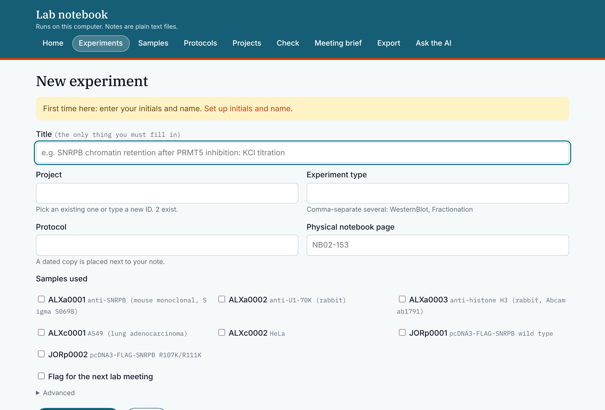

How it works
Daily use
Open the notebook page and choose your folder
In Chrome or Edge, click Open the notebook and pick the notebook folder. The page works on the files in that folder and does not upload them. In Safari or Firefox, double-click Open ELN instead.
Click New experiment and enter a title
The tool creates the experiment folder, the note, a dated copy of the protocol, and a row in the lab index.
Click Edit here and write
Write the objective before you start. Add the results, interpretation, and decision when you have them.
Put your files in the experiment folder
Start the names of figures, tables, and scripts with the experiment ID. Put instrument files in
2-data_rawwithout renaming or editing them.
When an experiment is finished, Mark complete checks that the note is filled in, records the completion date, and saves a single-file HTML copy that can be printed or uploaded to LabArchives. Meeting brief compiles a summary of the experiments you flagged for lab meeting.

File format
Each note is a Markdown text file
The left panel shows a note in the notebook page. The right panel shows the file that is saved. There is no database. The text file is the record, and any text editor can open it.
SNRPB chromatin retention after PRMT5 inhibition
JSRe0002 · Jacob Roth · started 1 Sept 2026 · example
Objective
Does PRMT5 inhibition increase the chromatin-bound fraction of SNRPB?
Results
The chromatin fraction rose from 0.31 to 0.58 across three replicates. Loading controls were even.
Interpretation
Consistent with the hypothesis. Preliminary: methylation has not been blotted directly.
--- experiment_id: JSRe0002 title: SNRPB chromatin retention after PRMT5 inhibition researcher: Jacob Roth project: [PRMT5-ChromatinRelease] date_started: 2026-09-01 status: active protocols: [P_WesternBlot] tags: [meeting] --- ## Objective Does PRMT5 inhibition increase the chromatin-bound fraction of SNRPB? ## Results The chromatin fraction rose from 0.31 to 0.58 across three replicates. Loading controls were even. ## Interpretation Consistent with the hypothesis. Preliminary: methylation has not been blotted directly.
- The form fills in the header.The lines between the dashes are metadata: project, researcher, status, protocols. They are used for searching, and AI tools read them first.
##marks a heading.The headings are added when the note is created. You write normal text under them.- No other program is required.You can edit in the notebook page with Edit here, or open the file in a plain-text editor such as Notepad, TextEdit in plain-text mode, or VS Code. Do not use Word; it adds formatting.
Try it
Name an experiment
Enter initials and a title to see the ID and folder that New experiment would create. This runs in your browser and nothing is sent.
File names
How files are named
- Experiment ID. Initials,
efor experiment, and a four-digit number. Every file from the experiment starts with it. - R marks the result. Use it for the one figure or table you would show at lab meeting. Optional.
- Description. A few words joined with hyphens.
- Date as YYYYMMDD. Optional.
Exception: files in 2-data_raw keep the names the instrument gave them and are never edited.
| Thing | Its ID looks like | Lives in |
|---|---|---|
| An experiment | JSRe0002 | its own folder under Experiments/ |
| A plasmid, antibody, cell line, gel… | JSRp0001 (p plasmid, a antibody, c cell line, g gel…) | one note in Samples/ |
| A protocol | P_WesternBlot | one note in Protocols/ |
| A project | PRMT5-ChromatinRelease | one note in Projects/ |
An ID written in a note is shown as a link in the notebook page, and Check reports IDs that do not match anything. Full rules: conventions. Short version: cheat sheet.
Comparison
Why plain files in a folder
The record is a folder of text files, so there is no software to maintain and no dependence on a vendor. A small tool creates the files and checks that they follow the conventions.
No accounts
The folder lives in the lab's Dropbox or OneDrive. Anyone with access to the folder has the notebook and the tools.
No database
If two people edit the same note while offline, the sync service keeps both copies and Check lists them.
Search by ID
Every file name starts with its experiment ID. A Finder or Explorer search for the ID finds the note, the processed data, and the figures. Raw instrument files keep their own names in 2-data_raw.
Convention check
Check reads every folder and note and lists misnamed files, missing fields, and IDs that do not match anything.
Read-only viewing and printing
Anyone in the lab can open a notebook with View a notebook, which cannot change it. Print / save as PDF prints a note with its figures, file list, checksum, page numbers, and signature lines.
Lab meeting brief
Flag an experiment for lab meeting. Meeting brief collects the objective, results, and decision from each flagged experiment.
Export
Export makes one text file to paste into ChatGPT, or a folder of plain files with a README and an index. A .eln archive is there for eLabFTW, RSpace, Kadi4Mat, PASTA, SampleDB, OpenSemanticLab, and SciLog.
| This folder | A hosted notebook app | Folders with no rules | |
|---|---|---|---|
| Readable without the software | Yes | After export | Yes |
| Works offline | Yes | Depends on the product | Yes |
| Cost | None beyond the storage you already have | License or a server | None |
| Same structure for every experiment | Yes | Yes | No |
| Checks naming and missing fields | Yes | Depends on the product | No |
| AI tools can read notes and cite experiment IDs | Yes | Depends on the vendor | No consistent structure |
| Signatures and audit trail | No. LabArchives remains the official archive. | Yes | No |
AI
Using AI with the notebook
Every note has the same header fields and headings, so an AI assistant can find the relevant experiments and cite them by ID. This works with the ChatGPT site license or a Claude subscription and does not need an API key.
Supported. Inhibition roughly doubles the chromatin-bound fraction in A549, 0.31 to 0.58, three replicates ALXe0002. Same direction in HeLa, smaller, two replicates ALXe0003.
Preliminary. A methyl-site mutant is more chromatin-bound, but that is a single replicate JORe0001.
Conflicting. Imaging shows no redistribution JORe0002.
Not in the record. Nobody has measured total SNRPB protein levels.
Shortened from the test run on the fictional sandbox notebook. The IDs are sandbox IDs, not lab data.
Example questions
- Check a write-upDo the numbers in my Results section match the data file?
- StatisticsWhich test fits this design? Write the sentence with the effect size.
- InterpretationWhat result would contradict this interpretation?
- SearchWhich experiments used this antibody, and what did each find?
There are three ways to use it, described under Ask the AI in the notebook page: copy an export into ChatGPT; open Codex, Claude Code, or Cowork in the notebook folder; or connect a tool that supports MCP to the notebook's own MCP server. Details.
Lab rule: the AI reports and cites what the notes say and does not invent results. People draw the conclusions.
FAQ
Questions
Do I have to learn Markdown or code?
No. You fill in a form and type text into a box. Headings start with ## and are already in the note when it is created. No terminal is needed.
Do I need GitHub or git?
No. GitHub hosts the tools for download. The notebook is a folder in the lab's Dropbox or OneDrive.
What do I have to install?
Nothing, in Chrome or Edge on a computer: the notebook page works directly on the folder you choose. Safari and Firefox cannot open folders, so there the notebook starts from the Open ELN launcher, which needs Python. macOS offers to install it the first time; on Windows, install it once from python.org.
Can I keep my paper notebook?
Yes. Each experiment note has a field for the paper notebook page, for example NB02-153.
Where does large data go?
Large data stays on institutional storage and the note records the location. The experiment folder holds notes, small tables, figures, and scripts.
Does it work with Dropbox and OneDrive?
Yes, either one, as long as its desktop app syncs the notebook folder to your computer. The page writes ordinary files into that folder and the sync app does the rest. The Dropbox or OneDrive website alone is not enough.
What if two people edit the same note?
The sync service keeps both copies and marks one as a conflict. Check lists conflict copies; open both and keep one. Experiment IDs include your initials, so two people cannot be assigned the same ID.
Is it private?
The page reads and writes the files in the folder you choose and does not send them anywhere. The notes are as private as the folder they are in. An AI tool sees a note only if you paste it into a chat or open the tool in the folder.
Can other people read my notebook without changing it?
Yes. In the notebook page they click View a notebook (read-only) and choose the folder; the page then asks only for permission to view and hides every button that changes something. To make the folder view-only in every program, share it as "can view" in Dropbox or OneDrive.
Can I print a note or keep a PDF?
Yes. Print / save as PDF on a note prints it with its figures, the list of files, the checksum of the note, page numbers, and lines for signatures. Mark complete also saves the same page as an HTML file next to the note.
Can another lab use this?
Yes. Copy the repository, edit docs/lab.yaml (lab name, links, colours, fonts), and replace the logo. The website, the notebook page, and the printouts all read that one file.
What about LabArchives?
LabArchives remains the official archive. Mark complete saves a single HTML file with the figures embedded. Print it to PDF and upload it under the same experiment ID.
What if we stop using it?
The folder of text files and figures stays usable without the tools. The .eln export can be imported into other notebook systems.
What about the folders I already have?
Start the notebook in the folder where they are, or put them into it. Nothing is changed until you choose Adopt for a folder. It then gets an experiment ID and a note, and the folder is moved, as it is, into that experiment's raw-data folder.
Does the lab need one shared notebook?
No. Each person keeps a notebook folder of their own. If the folders sit side by side in a shared folder, the page lists them, and anyone with access can open one for viewing.
Setup
Getting started
In Chrome or Edge: nothing to install
- Choose a folder for your notebook in your Dropbox or OneDrive folder on this computer. An empty folder works, and so does one that already holds your work.
- Open the notebook page and click Open notebook folder.
- Choose the folder and allow the page to edit it. The browser asks once.
- Enter your initials and name under settings. Then click New experiment.
In Safari or Firefox, or with the launchers
These browsers cannot open folders, so the notebook starts from a launcher in the notebook folder. It needs Python.
- Download the folder, unzip it, and put it in your Dropbox or OneDrive. It holds the tools, and your notebook is kept in it unless you name another folder.
- Open the
launchersfolder and right-click Open ELN, then choose Open. macOS asks once whether you trust it. - If macOS offers to install developer tools, click Install and wait a few minutes. This installs Python.
- Enter your initials and name when the page asks. Then click New experiment.
- Install Python from python.org, once. Tick Add python.exe to PATH on the first screen.
- Download the folder, unzip it, and put it in your Dropbox or OneDrive. It holds the tools, and your notebook is kept in it unless you name another folder.
- Open the
launchersfolder and double-click Open ELN. - Enter your initials and name when the page asks. Then click New experiment.
Practice notebook
In the browser, click Open the practice notebook on the first screen. With the launchers, Try the Sandbox opens the same page on a fictional notebook with seven experiments. Neither touches real data.
Cheat sheet
The cheat sheet lists the IDs, the folders, the file-name pattern, and the buttons. It prints on one page.
Command line and MCP
The same functions are available from a Python script (python3 scripts/eln.py --help), a Node command (node mcp/call.mjs --list), and an MCP server (node mcp/server.mjs). None has dependencies.